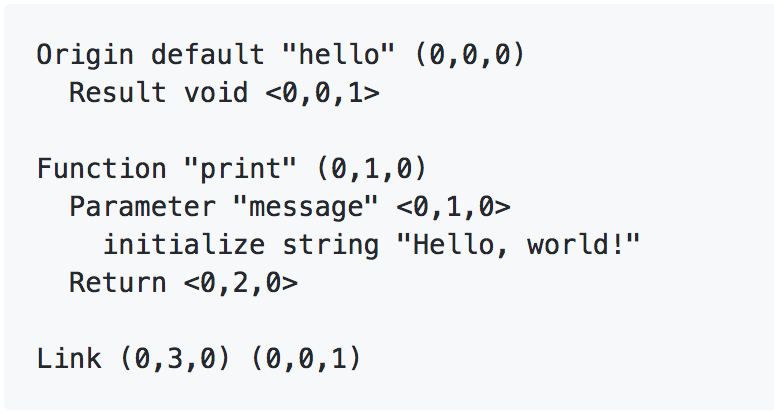

Nebula's uniqueness is exemplified even by a simple "Hello, World!" program. Before taking a look at the code, consider the following symbol diagram:
Because Nebula is intended to be an interactive programming language, seeing programs pictorally is often helpful or even necessary. This is because Nebula works differently than most other languages. A Nebula program is essentially a collection of linked nodes whose parameter values rely on the actions of other nodes. In hello-world.star, the action begins at the Result statement. Realizing that it requires a value, the Result statement queries its Control. The Control leads to a simple print function that does what you'd expect... writes to stdout. The print function has its own parameter to satisfy, and as denoted by the diagram, it has been linked to a primitive: the string "Hello, World!". Now, as the data ripples forward, the Result statement's Control query is satisfied. Note that every construct in the program text has an associated coordinate. This is because Nebula is built for programming in virtual reality. The location of every construct in 3D space is important for the spatial scoping and visual layout of the language, so coordinate tracking is necessary. Here's the code for hello_world.star:
Nebula programs should be drawn out and concepualized before being coded. The following symbol key includes all important symbols that can be used in Nebula diagrams.